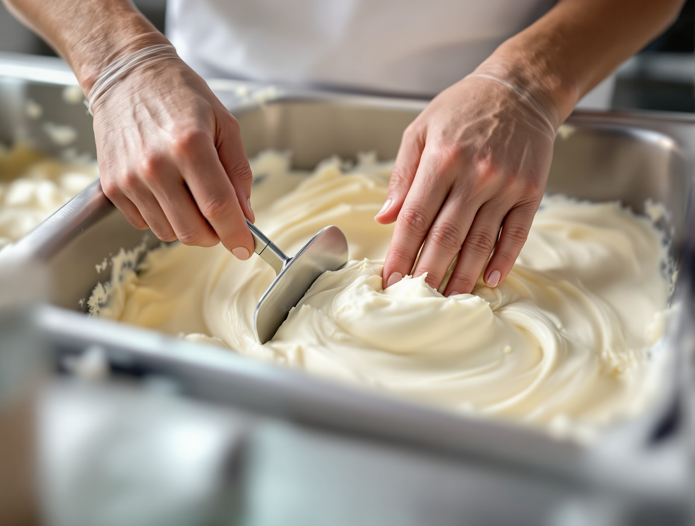
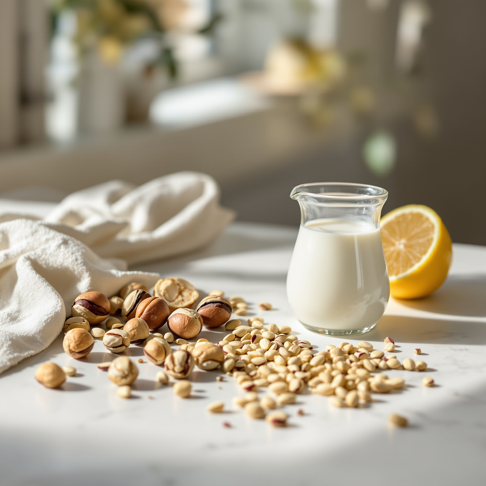
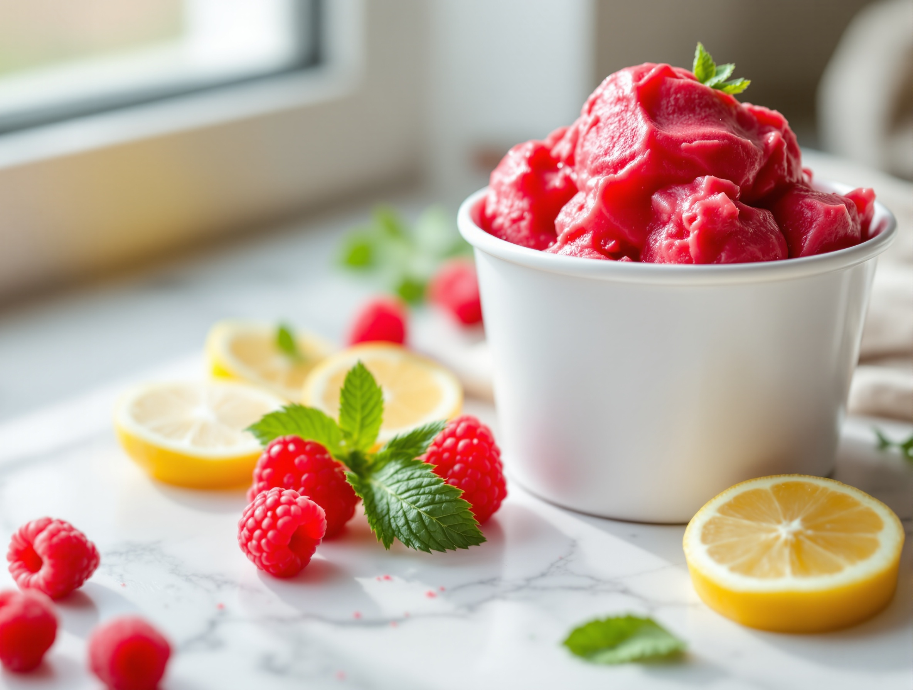
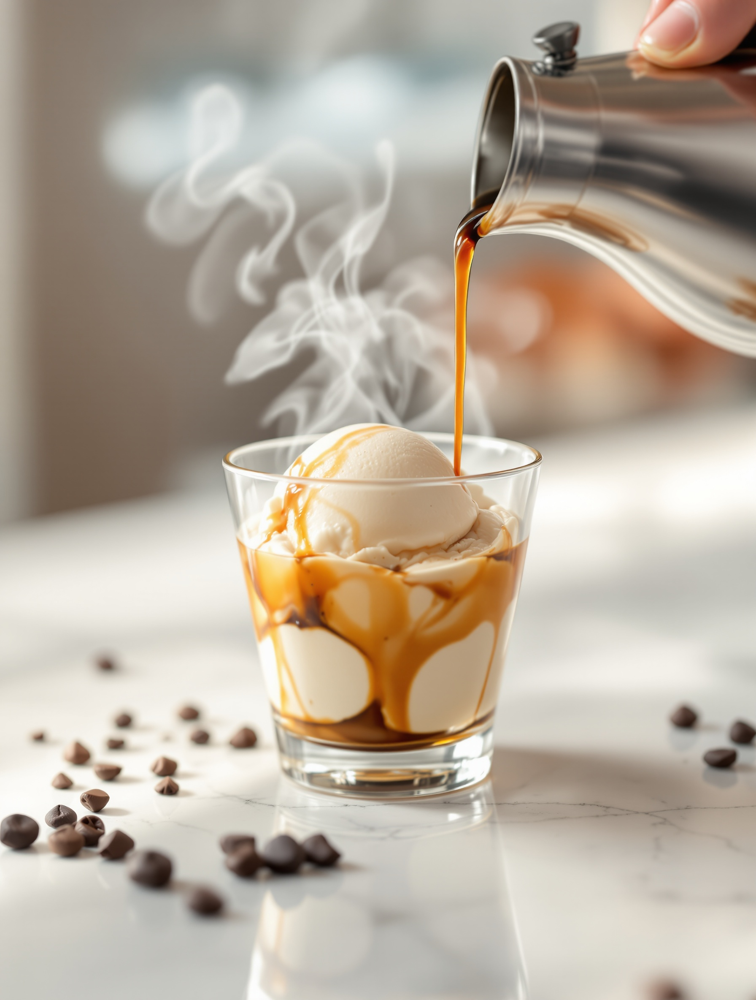
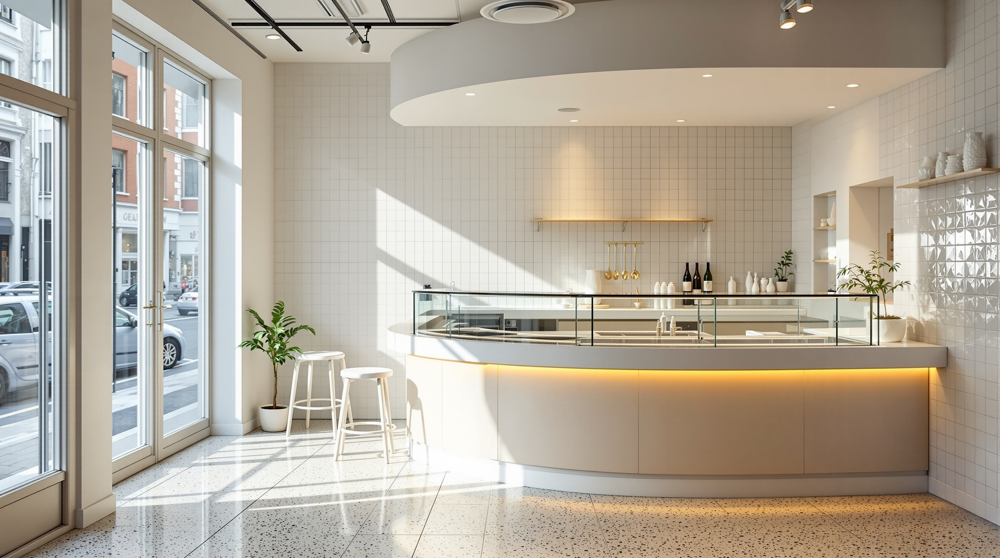
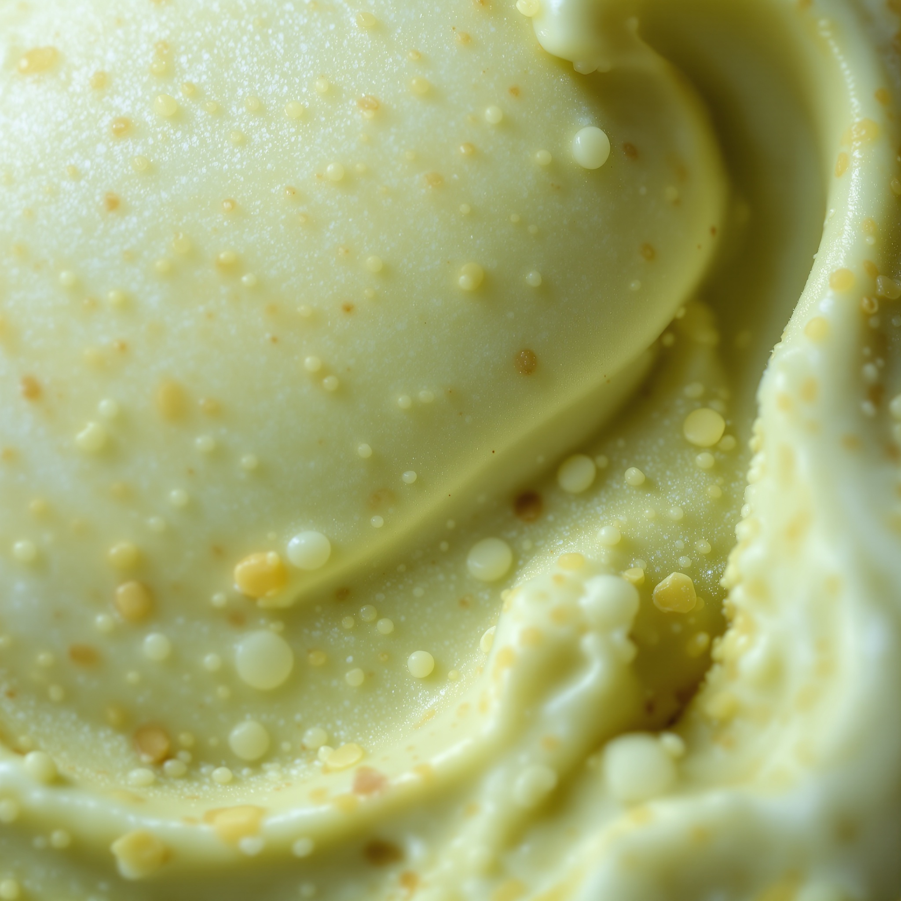

Gelateria artigianale · Sesto San Giovanni (Milano)
Alice
mantecato in giornata
Poche carapine, mantecate ogni mattina. Base di latte fresco e sorbetti di sola frutta di stagione. Non venti gusti sempre uguali: piccole quantità che finiscono e si rifanno.
Via Felice Cavallotti 128, Sesto San Giovanni (MI)
Il gesto
Mantecato in giornata,
in piccole quantità


Il nostro unico segreto è il lavoro fresco.
Ogni mattina partiamo dal latte fresco e da frutta di stagione. Manteciamo poche carapine per volta. Quando un gusto finisce, lo rifacciamo: non lo lasciamo invecchiare in vetrina.
- Base di latte fresco, non preparati industriali.
- Sorbetti di sola frutta, senza latte.
- Piccole quantità, mantecate in giornata.
A base di latte
I gusti di crema
Sola frutta, senza latte
I sorbetti di frutta

Solo frutta di stagione e acqua. Niente latte, niente derivati.
I sorbetti seguono il mercato: cambiano con la frutta che troviamo matura. Sono l’opzione giusta per chi cerca qualcosa senza latticini, o semplicemente più fresco.
La frutta cambia con la stagione: alcuni gusti ci sono solo in certi mesi.
Oltre la pallina
Le specialità

Affogato al caffè
Una pallina di fiordilatte, un espresso versato al momento.
Coppa
Due o tre gusti a scelta, per fermarsi seduti al banco.
da € 4,50Cono gourmet
Cialda croccante e un gusto in evidenza, servito con cura.
da € 3,50Vaschette d’asporto
Da 500 g o 750 g, mantecate al momento da portare a casa.
da € 12,00Su ordinazione
Per una cena o un compleanno, preparaci la vaschetta che vuoi: chiamaci il giorno prima.
Chiama per ordinare →Il luogo
La vetrina
Un banco piccolo e pulito, luce di giorno dalla vetrina. Si vede quello che c'è e come lo serviamo: nessuna montagna gonfiata, solo carapine appena mantecate.


Prima di venire
Domande frequenti
Avete opzioni senza latte?
Sì. I nostri sorbetti sono di sola frutta e acqua, senza latte né derivati. Cambiano con la stagione: chiedete al banco quali ci sono oggi.
Ci sono gusti senza glutine?
Molti gusti non contengono glutine, ma lavoriamo cialde e biscotti nello stesso locale. Se avete un’intolleranza, chiedeteci prima di ordinare: vi diciamo con precisione cosa potete prendere.
Si può portare a casa?
Sì, prepariamo vaschette d’asporto da 500 g e 750 g, mantecate al momento. Per quantità più grandi o per una data precisa, chiamateci il giorno prima.
Quando siete aperti?
Da martedì a domenica, pomeriggio e sera; nel fine settimana anche a pranzo. Il lunedì siamo chiusi. Gli orari precisi li trovate qui sotto, in «Vieni a trovarci».
Dove siamo
Vieni a trovarci
Indirizzo
Al·ice — gelateria artigianaleVia Felice Cavallotti, 128
20099 Sesto San Giovanni (MI)
Telefono
+39 333 543 0143Orari
- Martedì – Venerdì
- 15:00 – 22:30
- Sabato – Domenica
- 12:00 – 23:00
- Lunedì
- chiuso
A piedi in zona Cavallotti, a Sesto San Giovanni. Passa quando vuoi: manteciamo tutto il giorno.